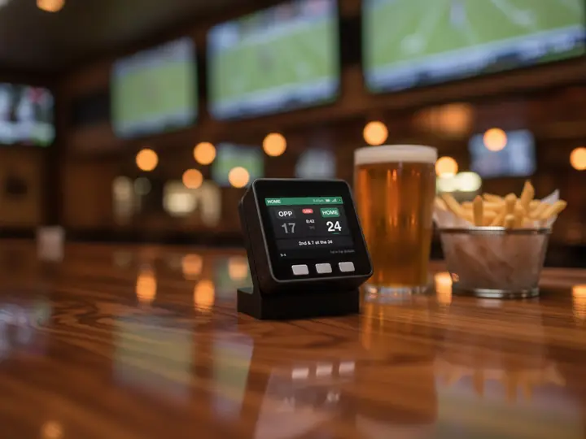
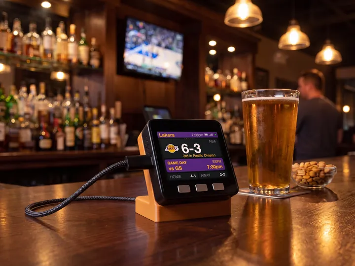

College Basketball (W) · Basketball
Cornell Big Red women's basketball, live on your desk.
The record, the next game and the live score, in Cornell colours. Follow the Cornell Big Red alone or with up to five other teams.

The screen fills in with the real record and next game when the scores feed loads.
On the screen
What it shows for the Cornell Big Red.
- The season so far
Cornell Big Red's College Basketball (W) record and place in the standings, under the logo. The title bar reads Cornell and your local time.
- The next game
Opponent, tip-off time in your time zone and TV. On game day the card lights up in Cornell colours.
- Live games
The score with the clock and period. The game takes over the screen until it ends.
- The numbers
Win or loss streak, points for and against, home and away records.
Set up
Set it up for Cornell in a minute.
No app, no account, no subscription.
- 1Plug it in
Scan the code on the screen to join its Wi-Fi. The setup page opens.
- 2Pick your Wi-Fi
Choose your home network and enter the password. It needs 2.4 GHz.
- 3Choose Cornell Big Red
League: College BB (W). Team: Cornell Big Red. Add up to five more, then Save.
In use
The score, without the app.
On the coffee table during the game, or on your desk when you can't watch.



8 stand colours. Pick one to start your build.
FAQ
Questions.
Does sportsMeter show Cornell Big Red women's basketball scores live?
Yes. During a Cornell Big Red game the screen shows the score with the clock and period. It checks every 20 seconds, so it usually trails the action by under a minute.
How do I set it up for the Cornell Big Red?
Plug it in, scan the code on the screen and pick your 2.4 GHz Wi-Fi. Then choose College BB (W) as the league and Cornell Big Red as the team, and Save. No app or account.
Can I follow the Cornell Big Red and other teams?
Yes, up to six teams from any of 16 leagues, for example Coastal Carolina Chanticleers and Colgate Raiders. They take turns every 12 seconds, and a live game takes over. Double tap the left button to stay on one team.
Does it show the Cornell Big Red logo and colours?
Yes. Once online it fetches the team logo and uses its colours (#b31b1b and #ffffff). Until the logo arrives it shows COR on a block of the team colour.
What does it show when the Cornell Big Red are not playing?
The record, place in the standings and the next game with its tip-off time. Between seasons the card reads "No game scheduled" until the next game is on the calendar.
myDeskMeter